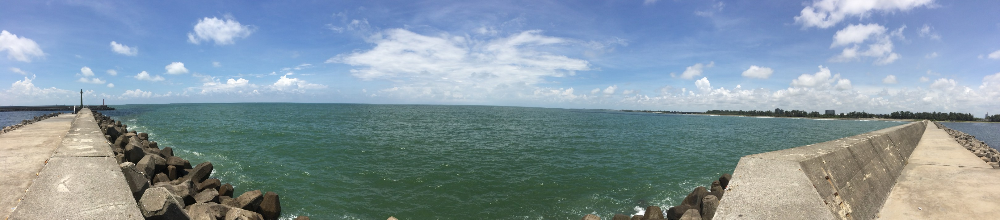

I am trained as an evolutionary geneticist with a deep interest in anthropology. My research focuses largely on the genetic history of diverse yet understudied ethnolinguistic groups from the Asia-Pacific region. In my PhD at the Max Planck Institute for Evolutionary Anthropology, I examined how population genetic diversity aligns with linguistic diversity across space and time. I expanded this scope during my previous postdoc at the Pasteur Institute to include cultural variation and phenotypic consequences through quantitative genetics. Now a postdoctoral researcher at the University of Zurich, I am investigating the joint-inference of gene-language transmission and evolution, as well as developing scalable and reproducible genomic pipelines.
Selected ones (*: contributed equally as first authors; #: correspondence)
Yin, Z., Gupta, Y. M., Prakhun, N., Kampuansai, J., Inta, A., Srikummool, M., Rodcharoen, P., Suwannapoom, C., Lorphengsy, S., Woravatin, W., Rodriguez, J. J. R. B., Khaokhiew, C., Stoneking, M., Kutanan, W.#, Liu, D.#, & Wang, K.# (2026). Exploring the genomic population structure and history of Austroasiatic speakers in Mainland Southeast Asia. Communications Biology.
Liu, D.*#, Ko, A. M. S.*, & Stoneking, M.# (2023). The genomic diversity of Taiwanese Austronesian groups: Implications for the "Into- and Out-of-Taiwan" models. PNAS Nexus.
Stoneking, M.*#, Arias, L.*, Liu, D.*, Oliveira, S.*, Pugach, I.*, & Rodriguez, J. J. R. B.* (2023). Genomic perspectives on human dispersals during the Holocene. Proceedings of the National Academy of Sciences.
Liu, D., Peter, M. B., Kayser, M.# & Stoneking, M.# (2022). Assessing human genome-wide variation in the Massim region of Papua New Guinea and implications for the Kula trading tradition. Molecular Biology and Evolution.
Kutanan, W.*#, Liu, D.*, Kampuansai, J., Srikummool, M., Srithawong, S., Shoocongdej, R., Sangkhano, S., Ruangchai, S., Pittayaporn, P., Arias, L., & Stoneking, M.# (2021). Reconstructing the human genetic history of mainland Southeast Asia: insights from genome-wide data from Thailand and Laos. Molecular Biology and Evolution.
Liu, D., Duong, N. T., Ton, N. D., Van Phong, N., Pakendorf, B., Van Hai, N.#, & Stoneking, M.# (2020). Extensive ethnolinguistic diversity in Vietnam reflects multiple sources of genetic diversity. Molecular Biology and Evolution.
Liu, D., Hunt, M., & Tsai, I. J.# (2018). Inferring synteny between genome assemblies: a systematic evaluation. BMC Bioinformatics.
Full list